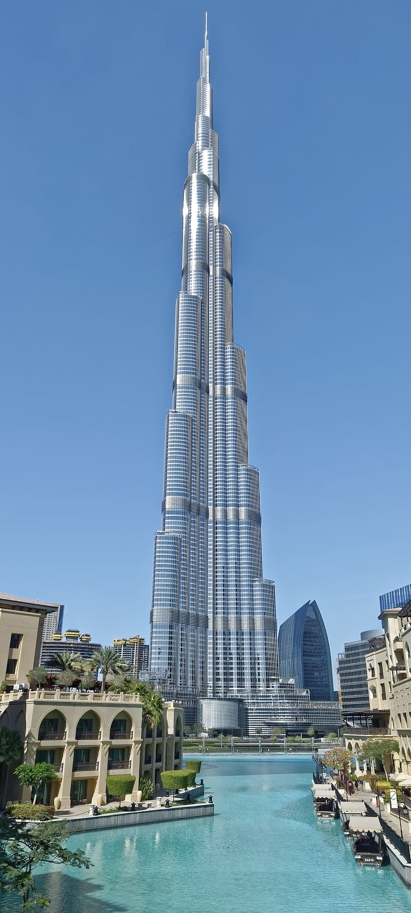

Polar bears are beautiful marine mamals.They can stay in the cold artic water for several days.I think polar bears are cool and their are only few of them left as they are an endangered species.and you should go and visit your nearest zoo and see a polar bear.There are few reasons I like polar bears:
Cricket (Its a popular game played in sotuh asia with over two billion people who play this game. it involves twelve players a Cricket bat and a ball and a wicket while a person throws the ball other person tries to hit it as far that the other eleven players dont catch it.)I like cricket becouse I grew playing cricket And I like the intense moments in cricket.There are several reasons I like cricket:

Learn more about Cricket
Burj khalifa(The tallest building in the world its located in United arab emirates,dubai.With its height being over 828 m, 830 m to tip.It has truely astonishing veiws of the dubai city.) here are a few reasons you should consider going to visit the Burj khalifa:
Visit the great Burj khalifa.
